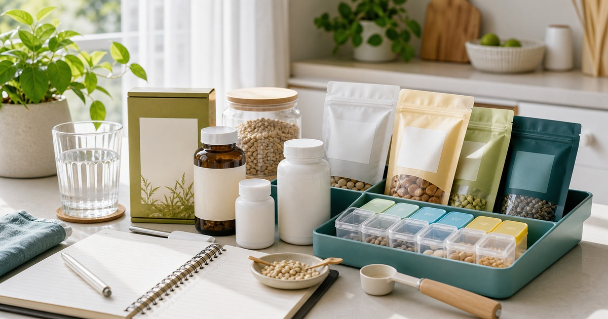

保健食品不要亂堆：素食營養、薏仁錠與日常補給的保守選購法
保健食品與日常補給應先從飲食缺口、標示、用藥與專業建議判斷，不應堆成一整排期待效果。

保健食品最怕被買成一排期待。外食多、素食、工作忙或想調整飲食的人，很容易把每個瓶罐都想像成解法；但真正負責任的順序，是先看飲食缺口、身體狀況、用藥、標示和專業建議，再決定是否需要補充。這篇採保守寫法，不承諾效果，也不替任何人做個人化建議。
先寫下飲食缺口，不先看產品名稱
日常補給應該從生活紀錄開始，而不是從商品清單開始。外食多的人可以先記三天飲食，素食者可以整理蛋白質、鐵、B12 或其他營養來源是否穩定，忙碌工作者則先看是否常常用點心取代正餐。
這些紀錄不是為了診斷自己，而是讓你知道問題是否真的需要保健食品處理。有些缺口可能透過餐食、睡眠、飲水或就醫評估更適合，不應全部交給瓶罐。
若你有慢性病、懷孕、備孕、哺乳、用藥、手術前後、肝腎功能問題或任何身體不適，請先諮詢合格醫療或營養專業人員。
如果你只是因為工作忙而覺得飲食不穩，第一步也許不是買補給品，而是先把早餐、午餐蛋白質、飲水和睡眠時間記清楚。紀錄越具體，越不容易把模糊疲憊投射到每一個商品上。
- 先記錄三天飲食與作息。
- 確認是否有用藥或健康狀況。
- 不把保健食品當作治療或替代正餐。
薏仁錠和素食補給都要回到標示
BWYA 薏仁錠、JAYSUWAN-健素旺和本草養生 From Nature，可以從薏仁錠、素食營養、草本沖泡與日常補給方向參考。比較時請先看成分、每日建議量、食用方式、注意事項、保存方式與適用限制。
本文不宣稱薏仁錠能美容、代謝、改善膚況或帶來任何身體效果。若你只是想建立日常補給習慣，先確認自己能否穩定、正確、保守地使用，比追求更多品項更重要。
素食補給也不能只看是否標榜素食。來源、成分、添加物、過敏原、與個人飲食結構的關係，都應被放進判斷裡；必要時請帶著產品標示詢問專業人員。
同一個成分在不同產品裡的份量、搭配和注意事項都可能不同，因此不建議只憑名稱判斷。把商品頁標示截圖或保存下來，日後詢問專業人員時會更清楚。
Elite 嚴選
醫材通路和生活防護用品不要混成療效想像
富達醫材與強哥批發可以放在醫材通路、生活防護、口罩酒精、部分保健與日用品補貨脈絡裡比較。這類店家可能同時有多種品項，更要分清楚哪些是一般生活用品，哪些涉及醫療器材或專業使用。
任何涉及醫材、輔具、檢測、護具或身體狀況的用品，都不應只憑文章下判斷。請看商品標示、適用範圍、主管機關資訊與專業建議。
生活防護用品也不代表能保證安全。口罩、酒精、清潔或消耗品應依標示使用，並搭配正確情境，不要被誇張字眼推動採買。
- 醫材與生活用品分開判斷。
- 涉及身體狀況時先問專業人員。
- 不把防護用品寫成安全保證。
不要把補給品堆成早晚儀式壓力
補給品越多，越容易忘記自己為什麼開始吃。若早上要吞很多顆、晚上還要沖很多包，日常很快會變成壓力，也更難分辨哪一項其實不適合自己。
比較保守的做法，是一次只新增一個品項，記錄使用日期、商品名稱、標示建議和自身反應。若有不適、疑慮或需要長期使用，請停止自行加碼並詢問專業人員。
也請保留原包裝和標示，不要把不同補給品倒進同一個收納盒。看得到成分與注意事項，比看起來整齊更重要。
保守採買順序：飲食、標示、專業，再下單
這類題材最值得被反覆提醒的是順序。先看飲食與生活習慣，再看商品標示；先確認是否有健康狀況或用藥，再決定是否下單；先少量、單一、可追蹤，再談長期補貨。
若商品頁寫到成分、建議量、限制條件、保存方式或適用對象，請完整閱讀。即時販售資訊與配送條件也可能變動，不應以文章文字為準。
本文為一般生活資訊，不構成醫療、營養、診斷、治療、用藥或個人化補充建議，也不承諾任何健康、體態、代謝、膚況或安全結果。
同主題品牌參考
FAQ
保健食品可以取代正餐或醫療建議嗎？
不可以。保健食品不應取代均衡飲食、醫療診斷、治療、用藥或專業營養建議。若有健康狀況、用藥或特殊需求，請先諮詢合格專業人員。
薏仁錠可以寫美容或代謝效果嗎？
本文不做這類宣稱。薏仁錠只以商品標示、食用方式、保存與保守選購情境討論，不承諾美容、代謝、改善膚況或任何身體效果。
日常補給應該一次買很多種嗎？
不建議。一次新增太多品項會難以判斷是否適合自己。較保守的方式是先記錄飲食缺口，一次只新增一項，並保留標示與使用紀錄。
下一步建議
先記錄飲食與用藥狀況，再依商品標示和專業建議保守比較日常補給。
重要警語
本文為一般健康、飲食與生活資訊整理，不構成醫療診斷、治療、用藥、營養或個人化補充建議；若有症狀、慢性病、懷孕、用藥或特殊飲食需求，請先諮詢合格專業人員。
本文含品牌／商品導購連結；若你透過部分商品連結前往選購，Elite Fashion 可能取得合作收益。本文仍以編輯判斷與使用情境整理為主，價格、規格、活動與庫存請以商品頁公告為準。